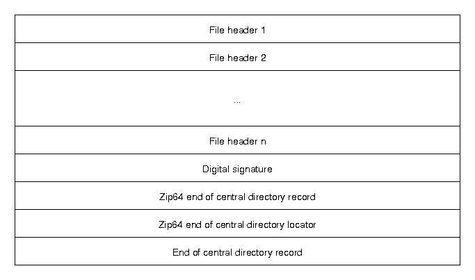

/** * struct pipe_inode_info - a linux kernel pipe * @mutex: mutex protecting the whole thing * @rd_wait: reader wait point in case of empty pipe * @wr_wait: writer wait point in case of full pipe * @head: The point of buffer production * @tail: The point of buffer consumption * @max_usage: The maximum number of slots that may be used in the ring * @ring_size: total number of buffers (should be a power of 2) * @tmp_page: cached released page * @readers: number of current readers of this pipe * @writers: number of current writers of this pipe * @files: number of struct file referring this pipe (protected by ->i_lock) * @r_counter: reader counter * @w_counter: writer counter * @fasync_readers: reader side fasync * @fasync_writers: writer side fasync * @bufs: the circular array of pipe buffers * @user: the user who created this pipe **/ structpipe_inode_info { structmutexmutex; wait_queue_head_t rd_wait, wr_wait; unsignedint head; unsignedint tail; unsignedint max_usage; unsignedint ring_size; unsignedint readers; unsignedint writers; unsignedint files; unsignedint r_counter; unsignedint w_counter; structpage *tmp_page; structfasync_struct *fasync_readers; structfasync_struct *fasync_writers; structpipe_buffer *bufs; structuser_struct *user; };
/** * struct pipe_buffer - a linux kernel pipe buffer * @page: the page containing the data for the pipe buffer * @offset: offset of data inside the @page * @len: length of data inside the @page * @ops: operations associated with this buffer. See @pipe_buf_operations. * @flags: pipe buffer flags. See above. * @private: private data owned by the ops. **/ structpipe_buffer { structpage *page; unsignedint offset, len; conststructpipe_buf_operations *ops; unsignedint flags; unsignedlongprivate; };
这个结构体存放了包括页引用、页偏移、数据大小等关键信息。这里的 flag 共有这几种：
1 2 3 4 5 6
// include/linux/pipe_fs_i.h #define PIPE_BUF_FLAG_LRU 0x01 /* page is on the LRU */ #define PIPE_BUF_FLAG_ATOMIC 0x02 /* was atomically mapped */ #define PIPE_BUF_FLAG_GIFT 0x04 /* page is a gift */ #define PIPE_BUF_FLAG_PACKET 0x08 /* read() as a packet */ #define PIPE_BUF_FLAG_CAN_MERGE 0x10 /* can merge buffers */
structiov_iter { /* * Bit 0 is the read/write bit, set if we're writing. * Bit 1 is the BVEC_FLAG_NO_REF bit, set if type is a bvec and * the caller isn't expecting to drop a page reference when done. */ unsignedint type; size_t iov_offset; size_t count; union { conststructiovec *iov; conststructkvec *kvec; conststructbio_vec *bvec; structpipe_inode_info *pipe; }; union { unsignedlong nr_segs; struct { unsignedint head; unsignedint start_head; }; }; };
其中，一些字段的意义如下：
type：表示当前迭代的数据是来自于什么结构，例如：
ITER_PIPE 表示当前迭代的数据为某个 pipe 中的页数据
ITER_DISCARD 表示写入当前 iov_iter 的数据全部丢弃。
ITER_KVEC do almost the same, but with data in kernel space,
ITER_BVEC to work with parts of memory mapped pages.
for (;;) { // 如果一个管道没有读者，则说明管道已经被破坏，生成 SIGPIPE 信号 if (!pipe->readers) { send_sig(SIGPIPE, current, 0); if (!ret) ret = -EPIPE; break; } // 尝试循环往管道内写入数据 head = pipe->head; if (!pipe_full(head, pipe->tail, pipe->max_usage)) { unsignedint mask = pipe->ring_size - 1; structpipe_buffer *buf = &pipe->bufs[head & mask]; structpage *page = pipe->tmp_page; int copied; // 获取先前被释放但是缓存起来的 tmp_page。 // 如果存在 tmp_page 则在向 pipe buf 写入数据时就可直接重用而无需分配 if (!page) { page = alloc_page(GFP_HIGHUSER | __GFP_ACCOUNT); if (unlikely(!page)) { ret = ret ? : -ENOMEM; break; } pipe->tmp_page = page; }
/* Allocate a slot in the ring in advance and attach an * empty buffer. If we fault or otherwise fail to use * it, either the reader will consume it or it'll still * be there for the next write. */ spin_lock_irq(&pipe->rd_wait.lock);
head = pipe->head; if (pipe_full(head, pipe->tail, pipe->max_usage)) { spin_unlock_irq(&pipe->rd_wait.lock); continue; }
pipe->head = head + 1; spin_unlock_irq(&pipe->rd_wait.lock);
/* Insert it into the buffer array */ // 往新的 pipe buf 中写入数据 buf = &pipe->bufs[head & mask]; buf->page = page; buf->ops = &anon_pipe_buf_ops; // 设置匿名管道操作 buf->offset = 0; buf->len = 0; // 如果 fd 设置了 O_DIRECT，则每次写入时都会占用新的一页，而不会合并 if (is_packetized(filp)) buf->flags = PIPE_BUF_FLAG_PACKET; else buf->flags = PIPE_BUF_FLAG_CAN_MERGE; pipe->tmp_page = NULL; // 复制页数据 copied = copy_page_from_iter(page, 0, PAGE_SIZE, from); if (unlikely(copied < PAGE_SIZE && iov_iter_count(from))) { if (!ret) ret = -EFAULT; break; } ret += copied; buf->offset = 0; buf->len = copied;
if (!iov_iter_count(from)) break; }
if (!pipe_full(head, pipe->tail, pipe->max_usage)) continue;
/* Wait for buffer space to become available. */ if (filp->f_flags & O_NONBLOCK) { if (!ret) ret = -EAGAIN; break; } if (signal_pending(current)) { if (!ret) ret = -ERESTARTSYS; break; } ... }
/* * If nobody else uses this page, and we don't already have a * temporary page, let's keep track of it as a one-deep * allocation cache. (Otherwise just release our reference to it) */ if (page_count(page) == 1 && !pipe->tmp_page) pipe->tmp_page = page; else put_page(page); }
/* * Attempt to initiate a splice from a file to a pipe. */ staticlongdo_splice_to(struct file *in, loff_t *ppos, struct pipe_inode_info *pipe, size_t len, unsignedint flags) { int ret;
if (unlikely(!(in->f_mode & FMODE_READ))) return -EBADF;
ret = rw_verify_area(READ, in, ppos, len); if (unlikely(ret < 0)) return ret;
if (unlikely(len > MAX_RW_COUNT)) len = MAX_RW_COUNT; // 调用 splice_read 函数 if (in->f_op->splice_read) return in->f_op->splice_read(in, ppos, pipe, len, flags); return default_file_splice_read(in, ppos, pipe, len, flags); }
以 linux 中最常见的文件系统 ext4 为例，这是 ext4 文件系统中所设置的一些关键方法：
/** * generic_file_splice_read - splice data from file to a pipe * @in: file to splice from * @ppos: position in @in * @pipe: pipe to splice to * @len: number of bytes to splice * @flags: splice modifier flags * * Description: * Will read pages from given file and fill them into a pipe. Can be * used as long as it has more or less sane ->read_iter(). * */ ssize_tgeneric_file_splice_read(struct file *in, loff_t *ppos, struct pipe_inode_info *pipe, size_t len, unsignedint flags) { structiov_iterto; structkiocbkiocb; unsignedint i_head; int ret;
// 根据 pipe 结构体，创建 iov_iter 结构 iov_iter_pipe(&to, READ, pipe, len); i_head = to.head; // 创建 kiocb 结构 init_sync_kiocb(&kiocb, in); kiocb.ki_pos = *ppos; // 调用 call_read_iter 执行实际的数据传输操作 ！！！ ret = call_read_iter(in, &kiocb, &to); // 如果数据正常传输 if (ret > 0) { // 更新文件访问情况 *ppos = kiocb.ki_pos; file_accessed(in); // 如果数据传输失败 } elseif (ret < 0) { to.head = i_head; to.iov_offset = 0; iov_iter_advance(&to, 0); /* to free what was emitted */ /* * callers of ->splice_read() expect -EAGAIN on * "can't put anything in there", rather than -EFAULT. */ if (ret == -EFAULT) ret = -EAGAIN; }
/** * generic_file_read_iter - generic filesystem read routine * @iocb: kernel I/O control block * @iter: destination for the data read * * This is the "read_iter()" routine for all filesystems * that can use the page cache directly. * Return: * * number of bytes copied, even for partial reads * * negative error code if nothing was read */ ssize_t generic_file_read_iter(struct kiocb *iocb, struct iov_iter *iter) { size_t count = iov_iter_count(iter); ssize_t retval = 0;
// include/linux/pipe_fs_i.h #define PIPE_BUF_FLAG_LRU 0x01 /* page is on the LRU */ #define PIPE_BUF_FLAG_ATOMIC 0x02 /* was atomically mapped */ #define PIPE_BUF_FLAG_GIFT 0x04 /* page is a gift */ #define PIPE_BUF_FLAG_PACKET 0x08 /* read() as a packet */ #define PIPE_BUF_FLAG_CAN_MERGE 0x10 /* can merge buffers */// <= 新引入的 flag
/** * Create a pipe where all "bufs" on the pipe_inode_info ring have the * PIPE_BUF_FLAG_CAN_MERGE flag set. */ staticvoidprepare_pipe(int p[2]) { if (pipe(p)) abort();
/* fill the pipe completely; each pipe_buffer will now have the PIPE_BUF_FLAG_CAN_MERGE flag */ for (unsigned r = pipe_size; r > 0;) { unsigned n = r > sizeof(buffer) ? sizeof(buffer) : r; write(p[1], buffer, n); r -= n; }
/* drain the pipe, freeing all pipe_buffer instances (but leaving the flags initialized) */ for (unsigned r = pipe_size; r > 0;) { unsigned n = r > sizeof(buffer) ? sizeof(buffer) : r; read(p[0], buffer, n); r -= n; }
/* the pipe is now empty, and if somebody adds a new pipe_buffer without initializing its "flags", the buffer will be mergeable */ }
/* open the input file and validate the specified offset */ constint fd = open(path, O_RDONLY); // yes, read-only! :-) if (fd < 0) { perror("open failed"); return EXIT_FAILURE; }
structstatst; if (fstat(fd, &st)) { perror("stat failed"); return EXIT_FAILURE; }
if (offset > st.st_size) { fprintf(stderr, "Offset is not inside the file\n"); return EXIT_FAILURE; }
if (end_offset > st.st_size) { fprintf(stderr, "Sorry, cannot enlarge the file\n"); return EXIT_FAILURE; }
/* create the pipe with all flags initialized with PIPE_BUF_FLAG_CAN_MERGE */ int p[2]; prepare_pipe(p);
/* splice one byte from before the specified offset into the pipe; this will add a reference to the page cache, but since copy_page_to_iter_pipe() does not initialize the "flags", PIPE_BUF_FLAG_CAN_MERGE is still set */ --offset; ssize_t nbytes = splice(fd, &offset, p[1], NULL, 1, 0); if (nbytes < 0) { perror("splice failed"); return EXIT_FAILURE; } if (nbytes == 0) { fprintf(stderr, "short splice\n"); return EXIT_FAILURE; }
/* the following write will not create a new pipe_buffer, but will instead write into the page cache, because of the PIPE_BUF_FLAG_CAN_MERGE flag */ nbytes = write(p[1], data, data_size); if (nbytes < 0) { perror("write failed"); return EXIT_FAILURE; } if ((size_t)nbytes < data_size) { fprintf(stderr, "short write\n"); return EXIT_FAILURE; }
2021-04-29: first support ticket about file corruption
2022-02-19: file corruption problem identified as Linux kernel bug, which turned out to be an exploitable vulnerability
漏洞的生命周期显然比较漫长.
背景:
zip
End of central directory record (EOCD) 和 Central directory file header

central dirctory header其实都是放在文件末尾, 这样便于添加新文件, 也可以把zip文件变成自我解压缩的zip文件, 只要在含有zip数据的可执行文件后加上header(?)
The ZIP format can hold collections of files without an external archiver, but is less compact than compressed tarballs holding the same data, because it compresses files individually and cannot take advantage of redundancy between files (solid compression).
The “sync flush” is what zlib implements when used with the Z_SYNC_FLUSH flag. It performs the following tasks:
If there is some buffered but not yet compressed data, then this data is compressed into one or several blocks (the type for each block will depend on the amount and nature of data).
A new type 0 block with empty contents is appended.
A type 0 block with empty contents consists of:
the three-bit block header;
0 to 7 bits equal to zero, to achieve byte alignment;
该函数会继续调用splice_direct_to_actor , This is a special case helper to splice directly between two points, without requiring an explicit pipe. Internally an allocated pipe is cached in the process, and reused during the lifetime of that process. pipe是作为中间人传递数据的, 以便于利用其他的splice函数. 反正pipe也是引用已有的page.